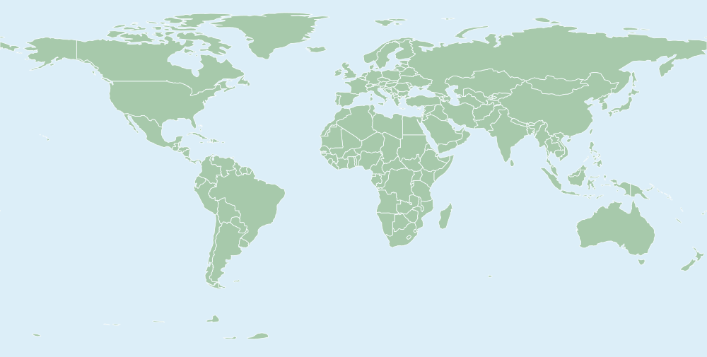

Learning Lab Around the World
Explore documented examples of Learning Lab work and how the approach is shaped by different local contexts.
Learning Lab in different places.
A global story should show how the work is shaped by each place, not imply that one model is simply copied everywhere.

Location
Project name: Details to be added
Point of contact (POC): Details to be added
Select a location marker to view project and contact information.
Locations associated with Learning Lab work: Wisconsin, Illinois, Kansas, Florida, and Rio de Janeiro, Brazil. Pins show approximate state or city locations, not project addresses.
Wisconsin
Identified in public source material as a context for Learning Lab implementation. Add approved project name, partners, dates, and outputs.
Kansas, Florida, and Illinois
Identified as locations associated with implementations. Confirm the details and current status of each example before publication.
Rio de Janeiro
Identified in public source material as an international example. Add context and partner-approved information.
Indigenous Learning Lab
Present as a community-specific story with appropriate context and consent, not as a generic map pin.
A UW–Madison article was identified as a source for these example locations. Each location and claim should be checked against the source and with relevant partners before launch.